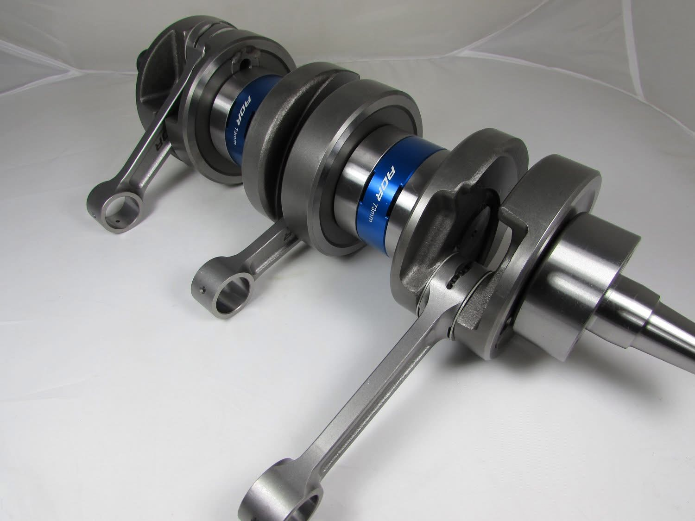

Send It In
Get a quote, then ship your crank or complete bottom end. How to send your core →
Cold starts, deep snow, and wide-open trails are hard on a 2-stroke sled crank. We rebuild snowmobile crankshafts for Ski-Doo and Polaris so your sled fires up and pulls hard all season.

From the Ski-Doo 600 carb and SDI/E-TEC engines to the 800R P-TEC and E-TEC, plus Polaris 550, 600, 700 and 800 BB, Carb and CFI engines and triples — we rebuild singles, twins, and triples with quality rods, bearings and seals.
Every snowmobile crank is welded where needed, pressed, trued to a tight runout, and balanced, then verified before it ships back so you can drop it in with confidence.
See full flat-rate pricing on the pricing page, or get a quote for your exact engine. Don't see your model listed? Call 208-297-3344 — we rebuild more than we can list.
Get a quote, then ship your crank or complete bottom end. How to send your core →
New rods, bearings and seals; welded, pressed, trued and balanced.
Measured for runout and checked before it ships back, ready to run.
Ski-Doo and Polaris sled cranks rebuilt to spec and returned ready for the season.